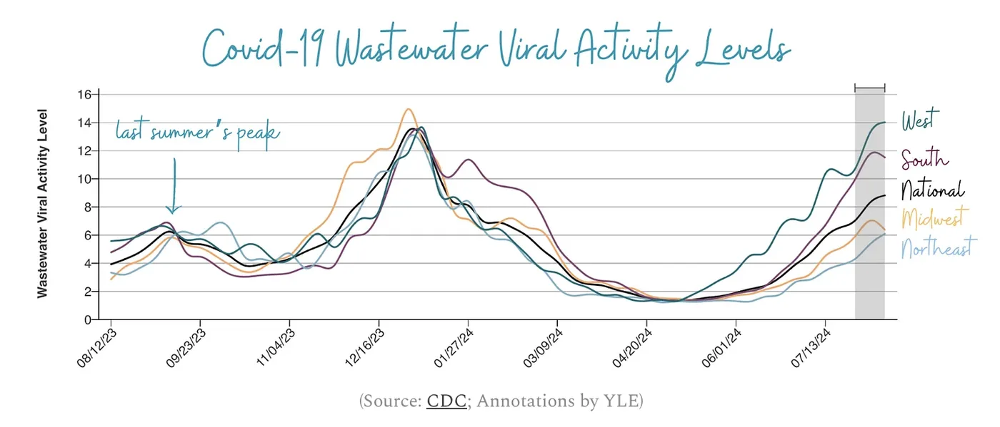
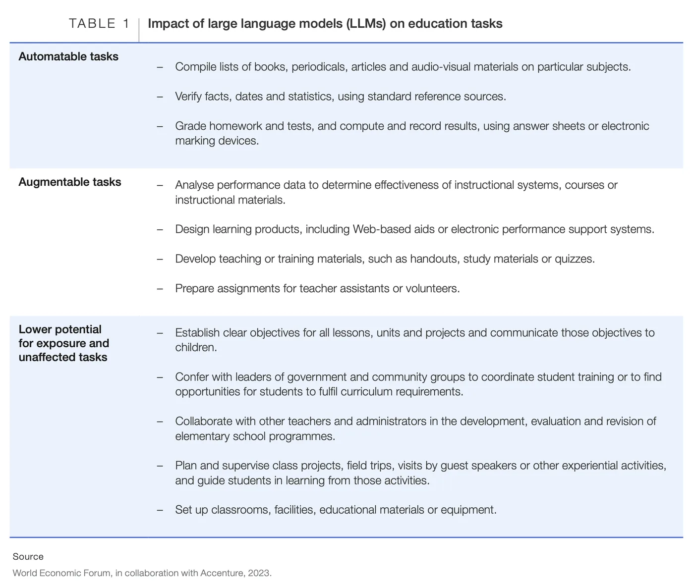

The Current State Of Gen Z (2024)
“79% of Gen Z feel optimistic about their futures, but only 51% feel prepared for them. 68% plan to go to college, yet only 22% feel very prepared to succeed in college.”
A weekly collection of education-related news from around the web.
← Previous Issue · Next Issue →
Happy last week of August, all!
The school year is beginning, and excellent reads abound: in this week’s features, find a short but clarifying look at the relationship between the science of learning and the art of teaching. I wrote about this a little over a decade ago, and this search for balance between the art and science of teaching and learning will forever be a part of what educators seek. Also in the features, find some helpful survey data about Gen Z: their perceptions, hopes, fears, and more.
Also this week, the national dialog around phone bans in schools is reaching a fever pitch. And it is almost entirely one sided. Hardly an objection exists to banning phones in schools. One head I spoke with called it a “no brainer.” Cultural anxieties about parents not being able to reach kids at school has been almost wholly overshadowed by the degree of distraction and distress caused by phones at school. See the Tech and Adolescence sections for a handful of posts on why and how to enact phone bans.
And don’t miss the AI section this week. The priority topic is the emergence of “synthetic relationships” people (including students) are forming with AI. This topic will be as significant in the future as cell phones and social media are today.
Also this week: student slang, supporting new teachers, covid updates, emotional awareness, and more.
These and more, enjoy!
Peter
PS. I’m grateful for the many of you who have joined me for a short call about your work as teachers and school leaders. I am still interested hearing more. If you are a teacher willing to share how you prepare your classes or a school leader who’ll share how you support teachers, I would be glad to learn from you. Thanks for scheduling a 20 minute call!

“79% of Gen Z feel optimistic about their futures, but only 51% feel prepared for them. 68% plan to go to college, yet only 22% feel very prepared to succeed in college.”
“Yes, with research we can identify potentially positive practices. What we can’t do is tell teachers how best to implement these insights in real classrooms. Having everyone mindlessly read a purpose-setting script at the start of a lesson may be a no-brainer. Noticing that some kids are neglecting that purpose, seems more in the realm of art.”
“As historian Yuval Noah Harari put it to me, there’s a fundamental difference between positive patriotism and negative nationalism. Positive patriotism is taking pride in your country. Negative nationalism is looking down on other countries. The lesson here is that ingroup solidarity doesn’t require outgroup prejudice.”
“But what if higher ed’s nearly 4,000 degree-granting colleges were boiled down to 100 institutions? Here is what that would look like:”
“Heads of School can support learning by being quiet sometimes. Not to mention the fact that I, as a Head of School, am not qualified to speak on all of these issues. I don’t have the kind of expertise one would need to speak on these issues, and I want to create a space for kids to express themselves.”
“The findings are part of the CDC’s biennial Youth Risk Behavior Survey, a nationally representative study of U.S. high school students. More than 20,000 students participated in the 2023 survey. “Considering the vital role schools play in promoting health and well-being, it is critical to address school-based violence and safety concerns,” said Kathleen Ethier, the CDC’s director of adolescent and school health, in a statement.”
“As schools across the country consider going phone-free next year (from bell to bell, not just during class), it’s important that they base their decisions on the best available data and the most accurate interpretation of the findings. We, of course, have been making the case for phone-free policies for a while.”
Two major themes this week:
First is the growing awareness of student use of AI for synthetic relationships. Character-based, generative AI technologies are increasingly a part of student lives: as friends, therapists, intimate partners, and more. This is a trend to be aware of — and I was about to say it is also a trend “to get ahead of,” but I’m not certain that anyone yet fully knows what it means to get ahead of this emerging behavior. Both harmful and helpful use cases are emerging, and it will take some time to work out what the role of character-driven generative AI technology is and ought to be in our students’ — and our — lives.
Also this week, find the beginnings of research on the efficacy of generative AI for both student learning and teacher preparation. For learning, the feature article shows how use of GenAI tools can harm students when they use it as a replacement for learning, and it can help them when they use it to augment learning. This seems to be similarly reflected in teacher productivity with generative AI. Teachers who use generative as a partner in designing lessons and preparing for class seem to have their productivity boosted. Those who use generative AI purely for delegating appear to have their productivity worsened. See the studies and articles this week for more.
Also this week, deepfakes and AI based deceptions are hitting the mainstream. Try your hand at two quizzes to see if you can spot AI generated writing and images.
These and more, enjoy!
Peter

“Consistent with prior work, our results show that access to GPT-4 significantly improves performance (48% improvement for GPT Base and 127% for GPT Tutor). However, we additionally find that when access is subsequently taken away, students actually perform worse than those who never had access (17% reduction for GPT Base). That is, access to GPT-4 can harm educational outcomes. These negative learning effects are largely mitigated by the safeguards included in GPT Tutor. Our results suggest that students attempt to use GPT-4 as a "crutch" during practice problem sessions, and when successful, perform worse on their own.”
“Snapchat last year said that after just two months of offering its chatbot My AI, about one-fifth of its 750 million users had sent it queries, totaling more than 10 billion messages. The Pew Research Center has noted that 59% of Americans ages 13 to 17 use Snapchat.”
“In this article, we illustrate the uses of AI in instructional design in terms of content creation, media development, and faculty support. We also provide some suggestions on the effective and ethical uses of AI in course design and development. Our perspectives are rooted in medical education, but the principles can be applied to any learning context.”
“In fall 2023, all teachers were novice users or had never tried generative AI. By spring 2024, the teachers separate into three distinct groups: (1) those who seek generative AI input (i.e., thoughts or ideas about learning plans) and output (i.e., quizzes, worksheets), (2) those who only seek generative AI outputs, and (3) those not using generative AI. The teachers in the first group-but not the second group-report productivity gains in terms of workload and work quality. Our findings have implications for understanding how to integrate generative AI into backward, goal-oriented workflows.”
“The big question I’ve been exploring this week is: what should a partnership of human instructional designer and AI look like in practice, and what does this mean for our key skills, roles and responsibilities? …According to a lot of research published in the last few years, there are a number of tasks which are “innately human” and some that are best delegated to AI. Here’s the TLDR on what this research found:”
“This term, the highest and lowest marks I awarded were to AI-augmented submissions. The worst one was a depressing stack of LLM list outputs, complete with Title Case Subheadings. Although there was no declaration of AI use, it wasn’t a stretch to imagine how the student might have prompted a bot with key words from the unit and assignment brief to produce something shaped like an assessment paper, but which, taken as a whole, made little more sense than a few pages of Samuel L. Ipsum... The best paper (by my own assessment, which is subjective) was one that contained a detailed disclosure of AI use, including an outline of targeted prompting approaches and a brief description of the iteration process. The paper itself was a sparkling synthesis of personal experience and evaluative judgement, and I was able to see that those aspects which had been delegated to the LLM (for instance, producing a conclusion paragraph and reducing the word count) did not obscure the student’s own voice or intentions. I feel, essentially, that both papers received about the same mark they might have done if AI had not been involved. Because in the end, what I saw was the ability of each student to comprehend the assignment, produce a response, and then evaluate their own response to determine how well it addressed what I had asked for.”
“We decided to hold a contest between ChatGPT and me, to see who could write — or “write” — a better beach read. I thought going head-to-head with the machine would give us real answers about what A.I. is and isn’t currently capable of and, of course, how big a threat it is to human writers. And if you’ve wondered, as I have, what exactly makes something a beach read — frothy themes or sand under your feet? — we set out to get to the bottom of that, too.”
“As Generative AI becomes more capable, it’s getting harder and harder to spot AI-generated images. Powerful image generation models like Flux (available through Grok on X) and Midjourney can create very believable images in many styles. Can you tell real from fake in the ten pairs of images below?”